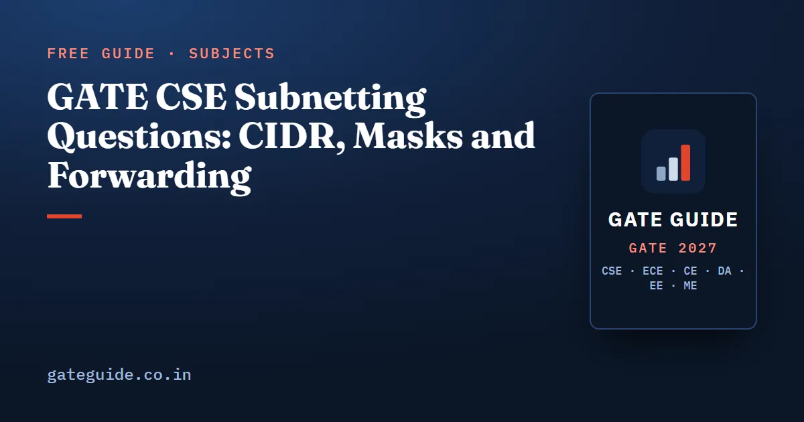

GATE CSE Subnetting Questions: CIDR, Masks and Forwarding

Addressing questions in GATE CSE get solved like arithmetic, once you stop converting addresses to binary. A prefix length gives you a block size, a block size tells you where the boundaries fall, and everything else follows: the network address, the broadcast address, the host count, whether two machines can talk directly, and which forwarding-table entry wins. This guide gives the full method and the mistakes that cost marks.
In this guide
Key takeaways
- A prefix means host bits, so the block holds addresses. That number is the only thing you need first.
- Blocks are aligned. A block of size starts at an address whose relevant octet is a multiple of .
- The network address is the first address of the block, the directed broadcast is the last, and usable hosts are .
- Only the octet where the prefix falls ever needs any binary thinking, and usually not even that.
- Forwarding uses the most specific matching prefix, not the first matching row. The default route 0.0.0.0/0 wins only when nothing else matches.
What the 2027 syllabus covers
The clause that matters here is "IPv4 - Fragmentation, CIDR Notation". CIDR notation is the heading under which masks, network and broadcast addresses, host counts, subnetting into equal or unequal blocks, supernetting and forwarding-table lookup all sit. Routing appears separately as distance vector and link state. Classful addressing is not named in the 2027 text, although it is the backdrop for many older previous-year questions. The clause-by-clause comparison with 2026 is in the guide to what changed in the Computer Networks syllabus for 2027. Syllabus documents can be revised, so check the current official notification.
On weight: unofficial analyst compilations place Computer Networks at 6 to 11 marks per paper from 2009 to 2026, averaging about 8.2, with 8.3 across 2009 to 2017 and 8.0 across 2018 to 2026. The direction is flat. The recent high was 11 marks in 2022, and one analyst counted six Computer Networks questions in the 2026 second shift. Sources differ by 2 to 3 marks because borderline questions are classified differently. The subject ranking behind these numbers is in Computer Networks important topics.
Reading a prefix as a block size
Subtract the prefix from 32 and raise 2 to that power. A /26 has host bits and a block of addresses. A /22 has host bits and a block of . That single number drives everything else.
The mask is the same fact in another costume: ones followed by zeros. The only octet that ever matters is the one where the prefix boundary falls, and there the mask value is .
| Prefix | Mask | Addresses in block | Usable hosts | Boundaries in the last octet |
|---|---|---|---|---|
| /24 | 255.255.255.0 | 256 | 254 | 0 |
| /25 | 255.255.255.128 | 128 | 126 | 0, 128 |
| /26 | 255.255.255.192 | 64 | 62 | 0, 64, 128, 192 |
| /27 | 255.255.255.224 | 32 | 30 | multiples of 32 |
| /28 | 255.255.255.240 | 16 | 14 | multiples of 16 |
| /29 | 255.255.255.248 | 8 | 6 | multiples of 8 |
| /30 | 255.255.255.252 | 4 | 2 | multiples of 4 |
When the prefix is shorter than 24 the same table shifts one octet left. A /22 is mask 255.255.252.0 with a block of 4 in the third octet, so the network addresses are 192.168.0.0, 192.168.4.0, 192.168.8.0 and so on. A /18 is mask 255.255.192.0, block 64 in the third octet. Move the block size into the correct octet and binary conversion becomes unnecessary for almost every question in this family.
Network address, broadcast address, usable hosts
Take 192.168.10.100/26. The block size is 64, so the boundaries in the last octet are 0, 64, 128 and 192. The value 100 falls in the 64 to 127 range. Therefore:
- Network address: 192.168.10.64
- Directed broadcast: 192.168.10.127
- Usable host range: 192.168.10.65 to 192.168.10.126
- Usable hosts:
The general formula is:
Two exceptions are worth carrying. A /31 holds two addresses and, on a point-to-point link, both are used as host addresses rather than as a network and broadcast pair, so it gives 2 usable. A /32 is a single host route and appears mainly inside forwarding tables. Unless a question sets up a point-to-point link explicitly, use the minus two form.
Running the other way is just as mechanical. If a department needs 300 hosts, you need at least addresses, the next power of two is , so the prefix is , a /23. Add 2 before rounding up, never after.
The same-subnet test in one step
Two hosts share a subnet if they have the same network address under the same mask, and you never need to compute both network addresses in full. Look at the octet where the prefix falls and compare the block index, which is the octet value divided by the block size, discarding the remainder:
Under a /26 mask, 192.168.10.100 and 192.168.10.130 give block indices and , so they sit in different subnets and traffic between them must cross a router. Under a /24 mask the block size is 256 and both give index 0 (), so they share a subnet. Same addresses, different answer, purely because of the mask. Questions in this family often hand you two addresses and ask which masks are valid.
Variable-length subnet masking
When departments need different host counts, cutting a block into equal parts wastes addresses. Variable-length subnet masking cuts a block into pieces of different sizes, and the working rule is to allocate the largest requirement first. If you place a small block at the start of the space, it sits on a boundary that a later, larger block also needs, and the allocation fails alignment.
Take 192.168.20.0/24 and requirements of 60, 28, 12 and 5 hosts.
| Requirement | Addresses needed | Block | Prefix | Allocation |
|---|---|---|---|---|
| 60 hosts | 62 | 64 | /26 | 192.168.20.0 to 192.168.20.63 |
| 28 hosts | 30 | 32 | /27 | 192.168.20.64 to 192.168.20.95 |
| 12 hosts | 14 | 16 | /28 | 192.168.20.96 to 192.168.20.111 |
| 5 hosts | 7 | 8 | /29 | 192.168.20.112 to 192.168.20.119 |
Every allocation starts on a multiple of its own block size, which is what makes it a legal CIDR block. Addresses 192.168.20.120 to 192.168.20.255 stay free. A common form of this question offers four allocations and asks which is valid, and the invalid ones usually fail on alignment rather than on the host arithmetic.
Supernetting and aggregation
Supernetting is the reverse operation: several blocks collapse into one advertised prefix. Three conditions must hold together. The blocks must be contiguous, their count must be a power of two, and the first block's address must be a multiple of the combined block size.
192.168.8.0/24, 192.168.9.0/24, 192.168.10.0/24 and 192.168.11.0/24 aggregate to 192.168.8.0/22. Four blocks, contiguous, and 8 is a multiple of 4.
Shift the same four blocks by one and they do not aggregate. 192.168.9.0/24 through 192.168.12.0/24 are still four contiguous /24s, but 9 is not a multiple of 4, so no single /22 covers exactly those four and nothing else. The alignment condition is the part candidates skip, and it is exactly what the question is testing.
Longest prefix match in a forwarding table
A router does not read its table top to bottom and stop at the first hit. It collects every entry whose prefix matches the destination and forwards using the longest one, because that is the most specific route. Row order carries no meaning.
| Prefix | Next hop |
|---|---|
| 0.0.0.0/0 | R0 |
| 10.0.0.0/8 | R1 |
| 10.12.0.0/16 | R2 |
| 10.12.64.0/18 | R3 |
| 10.12.72.0/21 | R4 |
The two prefixes that need care are /18, whose block is 64 in the third octet, covering 10.12.64.0 to 10.12.127.255, and /21, whose block is 8 in the third octet, covering 10.12.72.0 to 10.12.79.255.
- 10.12.73.5 matches /8, /16, /18 and /21. Longest is /21, so the next hop is R4.
- 10.12.80.1 falls outside the 72 to 79 range, so the /21 does not match. Longest remaining is /18, giving R3.
- 10.12.200.9 falls outside 64 to 127, so /18 drops out. Longest remaining is /16, giving R2.
- 10.30.1.1 matches only /8 and the default, giving R1.
- 192.168.4.9 matches nothing but 0.0.0.0/0, giving R0.
That last line is the role of the default route. A /0 prefix matches every destination with the lowest possible specificity, so it is chosen only when the table offers nothing else.
The traps in one list
- Forgetting to subtract the network and broadcast addresses, and answering 64 instead of 62.
- Mis-locating the block boundary when the prefix is not a multiple of 8. The block size belongs in the octet where the prefix falls, and only there.
- Assuming the forwarding table is scanned top to bottom. The most specific match wins regardless of order.
- Allocating the smallest block first in a variable-length split and breaking the alignment of a later, larger block.
- Aggregating blocks that are contiguous but not aligned, or whose count is not a power of two.
- Adding 2 to the host requirement after rounding to a power of two instead of before it.
- Treating the default route as a fallback the router reaches last in the list rather than as the shortest prefix.
The cross-subject version of this list is in common mistakes that cost marks in GATE CSE, and the mask, block-size and host-count relations are condensed in the GATE CSE formula sheet.
How to practise
Build one worksheet and reuse it. Take a single /24 from a private range, write every prefix from /25 to /30 with its mask, block size and host count, and check that you can produce any column from any other in under ten seconds. Then pick random addresses inside that block and write their network and broadcast addresses without touching binary.
After that, drill the forwarding table. Write five overlapping prefixes with a default route, place the most specific entry in the middle of the list, and answer six destinations. When that stops needing thought, the two-mark version in the paper takes under ninety seconds. The Computer Networks chapter of the GATE CSE 2027 book extends this method with a graded question bank on fragmentation, address translation and forwarding, each worked step by step.
Frequently asked questions
How do you calculate the number of usable hosts in a subnet?
Subtract the prefix length from 32 to get the host bits. The block then holds addresses. Remove the network address and the directed broadcast address, so usable hosts equal . A /26 holds 64 addresses and 62 usable hosts, and a /30 holds 4 addresses and 2 usable hosts.
What is the smallest CIDR block for a given number of hosts?
Add 2 to the host requirement, then round up to the next power of two. For 1,000 hosts you need at least 1,002 addresses, so the block size is 1,024 and the prefix is /22. Check the alignment too, because the starting address of the block must itself be a multiple of the block size.
How does longest prefix match work in a forwarding table?
The router compares the destination against every entry, keeps the entries whose prefix matches, and forwards using the one with the largest prefix length. Table order is irrelevant, so a more specific entry listed last still wins. The default route 0.0.0.0/0 matches everything with prefix length zero, which means it is chosen only when no other entry matches.
Is subnetting still in the GATE 2027 CS syllabus?
Yes. The Computer Networks section lists IPv4 with fragmentation, CIDR notation and network address translation. CIDR notation covers masks, network and broadcast addresses, host counts, subnetting and supernetting, and forwarding-table lookup. Routing appears separately as distance vector and link state. Confirm the wording against the current official syllabus PDF before you plan around it.
Why do /31 and /32 prefixes not follow the minus two rule?
A /31 holds only two addresses, so subtracting a network and a broadcast address would leave none. On point-to-point links both addresses are used as host addresses, giving two usable. A /32 is a single address used as a host route, common in forwarding-table questions. GATE questions on ordinary LAN subnets still expect the minus two form.
How much is Computer Networks worth in GATE CSE?
Unofficial analyst compilations put Computer Networks between 6 and 11 marks per paper from 2009 to 2026, with an average near 8.2 and a recent high of 11 in 2022. Sources disagree by 2 to 3 marks because borderline questions are classified differently. Addressing and forwarding items are a recurring part of that block.
Sources
- GATE 2027 official website (IIT Madras)
- GATE 2027 CS syllabus (official PDF)
- GATE 2027 question paper pattern (official)
- GeeksforGeeks subject-wise weightage for GATE CS
- GATE Overflow previous year questions
Dates, fees and the syllabus are set by the GATE 2027 organising institute and can change. Always confirm at gate2027.iitm.ac.in.